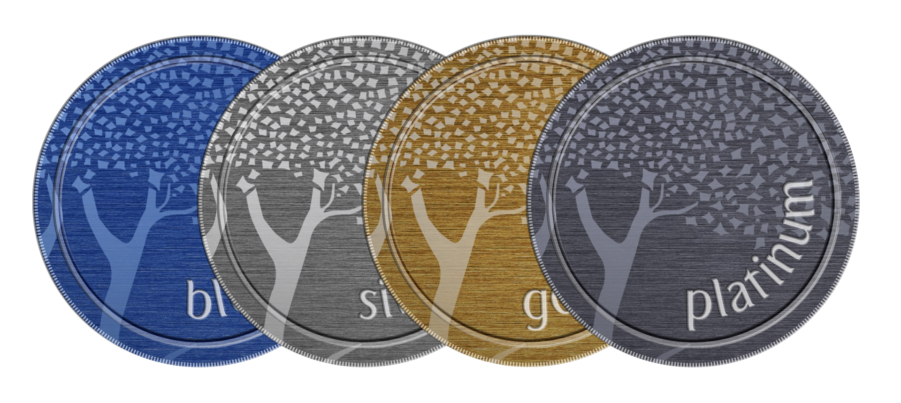
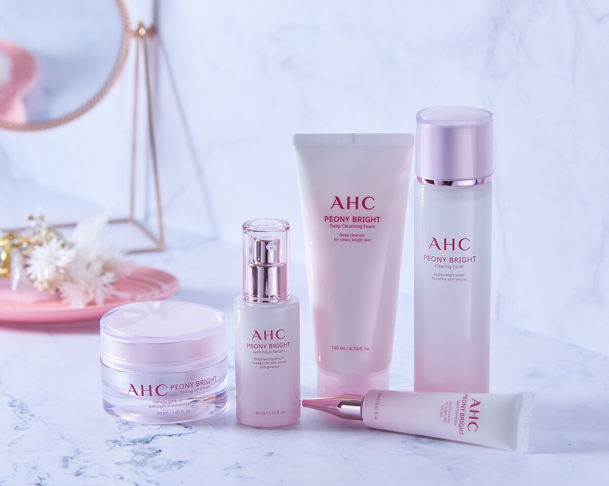

Selected Work
For more than 20 years across Asia and the Middle East, I've led integrated work for some of the world's largest brands: global campaigns, product launches, brand development, activations and large-scale events. A selection of the projects I owned or led sits below, each with the result it delivered.

Emirates Skywards Tier Advancement

AHC Skincare: SEA expansion
The full index
Hilton APAC GM and Commercial Conference
delegate engagement, a record · Strategy and comms lead
NTUC My First Skool: site and campaign
child registrations in four months · Project owner and copywriter
Casillero del Diablo: Legendary Pairings
online sales · Localisation strategy lead
Emirates Flight Training Academy
first cohort filled in under two months · Client-side brand lead
Malaysia Airlines: This is Malaysian hospitality
Kancil Awards 2023 · Project director and strategist
Emirates Pilot Recruitment
applications · Campaign and production lead
Emirates Skywards: My Family
shipped end to end, still live · Project and digital lead
The UOB Gallery
of heritage, opened on time · Strategy and comms lead